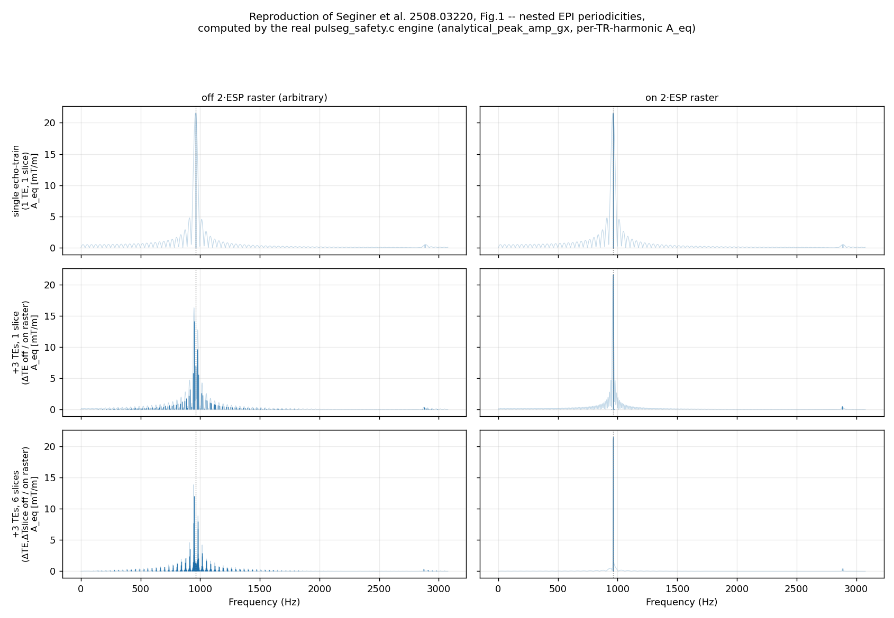
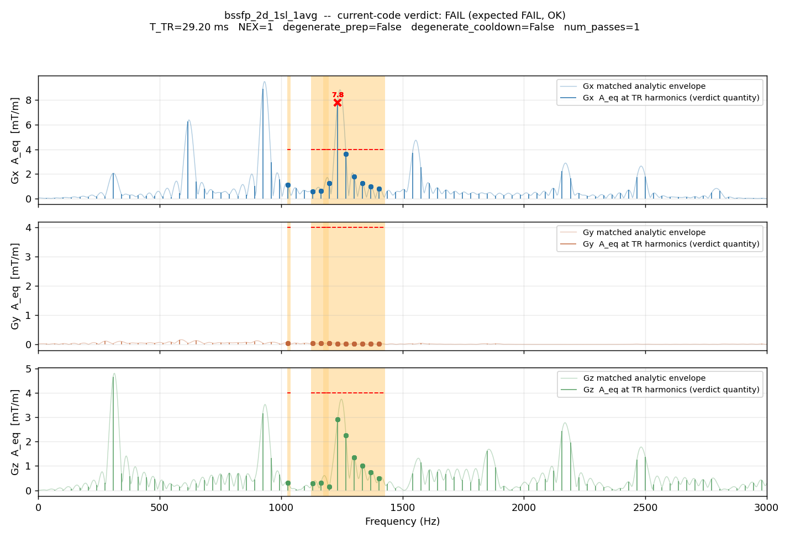
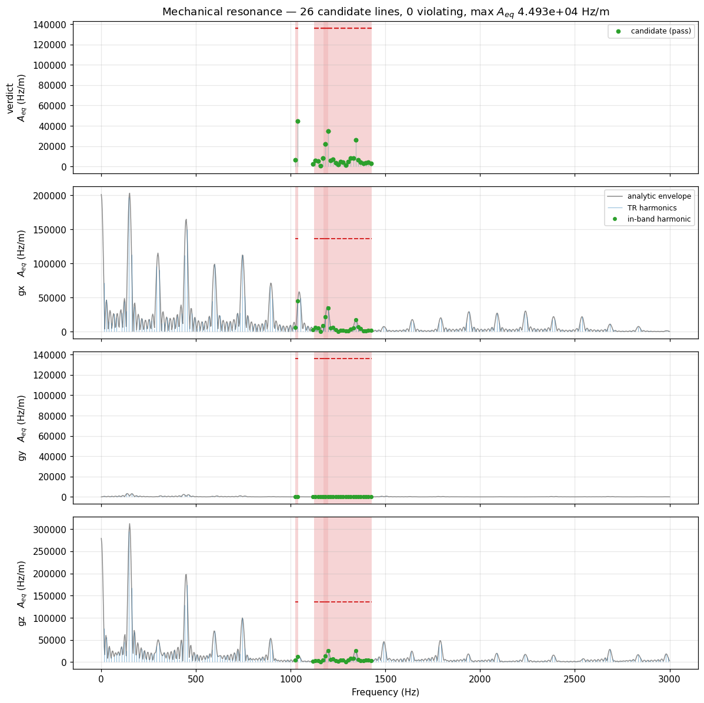

Mechanical Resonance Safety: Structural Acoustic Analysis#
Overview#
MRI gradient systems produce acoustic noise and mechanical vibration whose spectral content is
determined by the temporal pattern of gradient pulses within and across repetitions. Certain
frequencies excite mechanical resonances of the scanner bore, cryostat, or gradient coil assembly,
potentially causing hardware damage or exceeding acoustic safety limits. The structural acoustic
analysis module (pulseg_safety.c) computes a physics-informed spectral model of the gradient
waveform directly from Pulseq block timing — no windowed FFT of a simulated time series — and
checks it against user-defined forbidden frequency bands.
The analysis is performed per gradient axis independently (Gx, Gy, Gz) and per subsequence in a sequence collection. Forbidden bands carry no axis tag: a violation on any axis flags the candidate (see Rotation invariance).
The theoretical basis of the criterion descibed in this document is a generalization of the multi-train composition model of Seginer et al., “Acoustic energy prediction and control in EPI” (arXiv:2508.03220) — see Relation to Seginer et al. below.
The criterion, in one paragraph#
Every gradient event inside one canonical structural window (defined below) is modelled as a complex spectral line: its own waveform transform, shifted in phase by its start time, and multiplied by a Dirichlet-kernel factor if the event repeats identically (currently: NEX averaging). The per-axis spectrum $S_\text{ax}(f)$ is the coherent sum of every event’s line. The window’s own outer repetition (the canonical TR, or the whole pass for non-degenerate prep/cooldown sequences) is assumed to repeat infinitely — an exact Dirac comb at $f=k/T_\text{TR}$, not a finite-width sinc — which is the conservative, false-positive-suppressing choice for a scan that in practice runs many repetitions. The verdict statistic is
$$A_\text{eq}(f) ;=; \frac{2}{T_\text{TR}},\bigl|S_\text{ax}(f)\bigr| \qquad\text{[Hz/m]},$$
the amplitude of the pure sinusoid that would deliver the same coherent drive at $f$. It is evaluated only at TR-harmonic lines $f=k/T_\text{TR}$ that fall inside a forbidden band widened by a guard margin, and a violation is flagged iff $A_\text{eq}(f) > \varepsilon$, where $\varepsilon = \max(\text{band limit},\ 0.08\cdot G_\text{max})$.
Pipeline#
Stage 1 — canonical structural window and event extraction#
For each axis, every block inside one canonical structural window is inspected; a gradient event is recorded as an occurrence with:
def_id — gradient definition index.
start_time — cumulative time from the start of the window (µs).
amplitude — the per-position worst-case signed amplitude across all physical TR instances of that block position (e.g. a bipolar phase-encode gradient taking ${-5,1,0,1}$ across TR instances is stored as $-5$). This builds a virtual canonical window representing the worst-case spectral excitation while preserving sign, so opposite-polarity instances of the same definition contribute the correct phase.
What the window is depends on the sequence’s prep/cooldown structure:
Degenerate prep/cooldown (none present, or structurally identical to the repeating body): the window is one imaging TR. NEX and the outer TR count have no effect on the window itself — both are folded into the infinite-comb assumption at evaluation time (Stage 4).
Non-degenerate prep/cooldown (a
ONCE==1/ONCE==2region structurally different from the repeating body — e.g. a magnetization-prep pulse or a spoiler tail): the window is the whole pass (prep + all NEX repeats of the imaging body + cooldown).tr_duration_usis then the total scan-table duration divided bynum_passes, not a single imaging-TR length.
In the non-degenerate case, rather than physically enumerating every NEX copy, each imaging-body event is tagged analytically:
num_reps=num_averagesrep_period_us= imaging-body duration
Cooldown events are shifted to their true position after the NEX-expanded imaging body; prep events
keep their original position; both stay at num_reps = 1. A closed-form Dirichlet kernel (Stage 3)
then reproduces the effect of the repeats in $O(1)$ per event per frequency instead of $O(N)$.
Crucially, the structural-event model (used by the verdict) is built from the window before any physical NEX expansion. A physically NEX-expanded waveform is built separately, purely to render the dense-FFT display spectrum (never the verdict) — see Computational efficiency.
Stage 2 — per-event waveform response#
Each gradient definition’s normalized complex Fourier response $W_k(f)$ (with $W_k(0)=1$) is obtained from its true, unweighted shape — no peak-anchoring, no autocorrelation-based sub-period decomposition, no magnitude-only FFT model:
Trapezoid / extended-trapezoid / ramp gradients: the exact analytic Fourier transform of the piecewise-linear vertex sequence (raster-edge sampling convention).
Arbitrary waveforms: the exact transform of the raw sample sequence (cell-centered sampling, $t_m = t_\text{start} + (m+\tfrac12)\Delta t$), evaluated directly at each query frequency.
Stage 3 — spectral line and coherent sum#
The complex contribution of event $k$ at frequency $f$ is its waveform response, phase-shifted by its start time, multiplied by the Dirichlet repetition kernel if it repeats:
$$a_k(f) = A_k, W_k(f), e^{-j2\pi f t_k}, \qquad D_N(f,T) = \sum_{n=0}^{N-1} e^{-j2\pi f n T} = e^{-j(N-1)\pi fT},\frac{\sin(N\pi fT)}{\sin(\pi fT)}$$
(with $D_1 \equiv 1$). The per-axis structural spectrum is the coherent complex sum over every event in the window:
$$S_\text{ax}(f) = \sum_k a_k(f), D_{N_k}(f, T_k).$$
No periodicity beyond NEX is ever declared explicitly. An echo train’s ESP structure, a multi-slice repeat, or any other nested repetition are never modelled as separate closed-form Dirichlet factors — each instance is simply one more materialized event $k$ inside the window, and the emergent coherent sum reproduces exactly the same finite-N sinc-like train a hand-derived closed form would give (a sum of $N$ identical, equally-spaced phasors is algebraically the Dirichlet kernel, whether written as a closed form or accumulated one term at a time). See Relation to Seginer et al. for a worked comparison.
Stage 4 — evaluation grid and the finite-outer-rep fix#
The outermost repetition of the canonical window (further imaging TRs, or further passes) used to be assumed to repeat infinitely — an idealised Dirac comb, evaluated only at the exact harmonic lines $f = k/T_\text{TR}$. That framing was documented here as a “deliberate, conservative simplification,” but it is not conservative — it is non-invariant: it makes the verdict depend on how a sequence happens to be authored, not on the physical drive it represents. Concretely, the same physical waveform encoded two ways — $N$ identical blocks materialized inside one canonical window ($M{=}1$ outer repeats), or one block repeated $N$ times as the outer TR/pass count ($M{=}N$) — swept genuinely different frequency grids under the old rule (spacing $1/T_\text{TR}$ in the first framing, $1/(N,T_\text{TR})$-equivalent structure hidden inside the second’s larger $M$), and could disagree on the verdict. See PLAN_safety_mechres_finite_outer_rep.md for the full derivation and the (real, caught-in-implementation) bugs in getting this right.
Fix: the outer repeat is now folded via its actual finite count $M$ (num_instances) using the
closed-form Dirichlet ratio
$$\text{ratio}(f) = \frac{|D_M(x)|}{M}, \qquad x = f,T_\text{TR}, \qquad D_M(x) = \frac{\sin(M\pi x)}{\sin(\pi x)}$$
($\text{ratio}=1$ exactly at integer $x$ — the regression identity: at every exact TR harmonic this reduces algebraically to the pre-fix formula, which is why $M$-large scans reproduce the original verdicts bit-for-bit). Between consecutive exact harmonics, a small, fixed number of additional candidate frequencies are checked — geometrically spaced near each of the two adjacent harmonics, where the Dirichlet sidelobes actually live for large $M$ (the largest sidelobe sits within $\sim 1/(2M)$ of its lobe; naive uniform spacing across the whole inter-harmonic interval was tried first and found, empirically, to miss every sidelobe once $M$ exceeded the fixed sample count). $S_\text{ax}(f)$ is evaluated fresh at each of these fractional frequencies, not approximated from the nearby exact-harmonic value — an earlier attempt that reused the exact -harmonic amplitude and scaled it by $\text{ratio}(f)$ ($\le 1$ always) is a mathematical no-op, since a scaled-down value can never expose a candidate the exact harmonic didn’t already show. Cost stays independent of $M$: the number of exact harmonics in a guarded band never scaled with $M$ to begin with, and the extra per-harmonic sample count is now a fixed constant, not one that grows with $M$ (see Computational efficiency).
This is only applied to the outermost repeat — inner repeats (NEX, and any structurally materialized echo/slice repetition) get their true finite-N behaviour, per Stage 3, unchanged.
For display purposes only (never the verdict), the same $A_\text{eq}(f)$ is also evaluated on a dense TR-harmonic grid up to a configurable maximum frequency — this is what the corpus figures below plot as a continuous-looking curve; it is actually a comb of discrete points at every $k/T_\text{TR}$, dense enough (for the millisecond-scale $T_\text{TR}$ values typical of MRI) to look continuous on a kHz-scale axis.
Candidate selection and violation rule#
For each forbidden band $[f_\text{lo}, f_\text{hi}]$, let
$$\text{guard} = \tfrac12\min(\text{band widths}), \qquad \varepsilon_\text{band} = \max(\text{band limit},\ 0.08\cdot G_\text{max}).$$
Every harmonic line $f=k/T_\text{TR}$ with $f_\text{lo}-\text{guard} \le f \le f_\text{hi}+\text{guard}$ is a candidate. A candidate is a violation iff $\max_\text{ax} A_\text{eq,ax}(f) > \varepsilon_\text{band}$. The guard uses the narrowest active band as the sharpest resonance Q-factor proxy available; wider bands are keep-out ranges scanned at the same guard. The $0.08\cdot G_\text{max}$ floor sets a hardware-scaled noise floor below which incidental spectral leakage (e.g. a phase-encode blip’s tail landing near a band edge) is never flagged, independent of how tight a vendor band limit happens to be.
There is no separate “effective gradient amplitude” ($G_\text{eff}$) statistic. An earlier design computed a spectral-weighted mean of raw per-event amplitudes for the violation check while a different statistic ($A_\text{eq}$-like) gated candidate selection; the two were found to disagree by construction (the mean has no window/burst-derating behaviour), so $A_\text{eq}$ was unified to do both jobs — the amplitude compared against the band limit is always exactly the same amplitude used to decide the frequency is worth considering at all.
Relation to Seginer et al. 2508.03220#
Seginer et al. model a multi-echo, multi-slice EPI gradient train as an explicit convolution (their Eq. 2) of a single echo train with Dirac combs at the echo (TE), slice, and TR periods, and derive its Fourier transform (Eq. 3) as the single-train envelope multiplied by one closed-form sine-ratio (“sinc-like train”) factor per nested periodicity:
$$|g(\omega)| \approx |A_n(\omega_\text{2ESP})|\cdot \underbrace{|\text{sinc}(\cdots)|}{\text{envelope}}\cdot \underbrace{\left|\frac{\sin(\omega,\Delta T_E N\text{TE}/2)}{\sin(\omega,\Delta T_E/2)}\right|}{\text{TE comb}}\cdot \underbrace{\left|\frac{\sin(\omega,\Delta T\text{slice} N_\text{slice}/2)}{\sin(\omega,\Delta T_\text{slice}/2)}\right|}{\text{slice comb}}\cdot(\cdots T\text{R}\cdots)$$
Our Stage 3 coherent sum $S_\text{ax}(f)=\sum_k a_k(f) D_{N_k}(f,T_k)$ is the same physics, but the TE and slice factors are never declared as separate closed-form terms: every echo and every slice instance is materialized as its own event $k$ inside one canonical structural window, and the nested combs emerge from the coherent sum, because a sum of $N$ identical equally-spaced phasors is algebraically identical to the corresponding sine-ratio factor whether one writes the closed form or accumulates the sum term by term. The truly outermost repetition (Stage 4) is the one exception handled differently: rather than materializing it as more events, its finite count is folded analytically via the closed-form Dirichlet ratio — see Stage 4 and Computational efficiency for why this stays cheap regardless of how many events a window materializes or how large the outer repeat count is.
mechres_plots/epi_seginer_reproduction.py
reproduces the paper’s Fig. 1 (a multi-echo, multi-slice EPI train, echo spacing 0.52 ms, ETL 54,
3 TEs, 6 slices) with the real C engine (no python re-implementation): a single echo train, then
adding 3 TE repeats, then adding 6 slice repeats, each compared with the TE/slice spacing on vs.
off the $2\cdot\text{ESP}$ raster.

As in the paper: on-raster spacing keeps the acoustic energy concentrated in a single dominant peak regardless of how many echoes/slices are added (top-right = middle-right = bottom-right, same peak height), while off-raster spacing — a sub-millisecond timing difference — spreads it into a comb of comparable-height peaks around the fundamental. This is the paper’s central practical finding, reproduced end-to-end by the production safety engine.
Because every echo/slice instance is a real materialized event, the C engine can also export the
individual per-event phasors that sum to a candidate line (the component_* arrays in
pulseg_mech_resonances_spectra, populated at guarded-band candidate frequencies) — a
decomposition the paper’s magnitude-only product model does not offer:

At the true comb peak near the fundamental, all 18 materialized echo/slice events (3 TEs × 6 slices) add up almost perfectly in phase — the coherent vector sum is the comb peak; there is no separate “TE factor” or “slice factor” anywhere in the C code, only 18 individual event phasors and a running complex sum.
Rotation invariance#
The analysis is invariant to both per-block rotation events and global FOV rotation (oblique prescriptions). These operations redistribute gradient amplitude among the Gx, Gy, and Gz axes but do not change the total energy at any frequency. Because:
Forbidden bands carry no axis tag — each band is defined solely by $(f_\text{lo}, f_\text{hi}, A_\text{limit})$.
Every axis is checked against every band: the violation loop iterates over all three axes for each (candidate, band) pair.
Event extraction, spectral evaluation, and the eps/guard logic use identical logic and thresholds for all axes.
Energy cannot migrate to an unchecked axis. A candidate that violates a band on any single axis is flagged regardless of which physical gradient channel carries it.
Per-subsequence processing#
A sequence collection may contain multiple subsequences (e.g. a localiser followed by a scan). The analysis iterates over each subsequence independently:
Identify the canonical structural window (imaging TR, or whole pass for non-degenerate prep/cooldown sequences) and enumerate unique TR/pass variants by shot ID.
For each unique variant, build the structural event model, evaluate $A_\text{eq}$ at every guarded-band harmonic, and check against the forbidden bands.
In the safety-check path, the first violation triggers an immediate failure with a diagnostic message identifying the subsequence, TR variant, axis, frequency, amplitude, and band exceeded.
Computational efficiency#
The analysis cost depends on the complexity of one canonical structural window — not on the number of TRs or passes in the sequence, and not on sequence duration. Three independent factors matter (see the finite-outer-rep plan’s cost model for the fuller derivation):
$D$ — unique gradient definitions in one window. Usually small even for a long/complex hyper-TR (a handful of distinct shapes); amortized to $O(1)$ per repeated occurrence by the
sa_transform_cachememoization below.$M$ — outer TR/pass repeat count (
num_instances). Runtime is independent of $M$: the number of exact-harmonic candidates in a guarded band never scaled with $M$, and the finite-outer-rep fix (Stage 4) adds only a fixed number of extra samples per harmonic, regardless of how large $M$ is.$N$ — materialized instances of one definition within a single window (Stage 3’s coherent -sum length; not $M$). Usually small and cheap (one scale+phase accumulate per instance via the memoized base transform), but unproven at extreme scale (a very long hyper-TR densely packed with repeats of the same shape) — the one open cost risk, distinct from $M$.
Mechanics:
One-time base-definition work, now actually cached, not just architecturally amortized. Per-definition operations (PWL vertex construction, arb sample extraction) are performed once per unique gradient definition at build time; the base-waveform transform $W_k(f)$ itself is cached per
(def_id, frequency)for the duration of one spectrum evaluation (sa_transform_cache,pulseg_safety.c) — occurrences sharing a definition hit the cache instead of repeating the $O(\text{vertices})$ integral. (An earlier version of this document claimed this caching already happened; it did not —sa_eval_pwl_transformwas recomputed from scratch for every occurrence. The finite-outer-rep fix’s extra per-harmonic sample points made that gap load-bearing enough to close for real.)Analytical spectral evaluation. The window’s spectrum is a sum of closed-form phasor contributions, not a constructed-and-transformed time-domain waveform. Evaluating $N_f$ frequencies over $K$ events costs $O(N_f \cdot K)$, with the memoization above collapsing the effective $K$ toward $D$ (unique shapes) rather than total occurrence count for repeated definitions.
NEX is $O(1)$ per event, not $O(N)$, via the Dirichlet kernel (Stage 3) rather than physical enumeration.
Independence from $M$, not from sequence complexity. A 10 000-TR scan costs the same as a 10-TR scan with the same window structure ($D$ and $N$ unchanged) — the finite-outer-rep fix (Stage 4) adds a bounded constant-factor overhead per exact harmonic that does not grow with $M$. Two display-only arrays exist purely for plotting and are never used in the verdict: a dense-FFT spectrum of the physically-expanded, NEX-materialized waveform (
spectrum_full_g{x,y,z}), and a dense analytic envelope (envelope_amp_g{x,y,z}, see Visual validation) that reuses the same closed-form per-event evaluation as the verdict itself, just on a finer frequency grid. Both are computed only by the plotting API (pulseg_calc_mech_resonances) —pulseg_check_safety, the path predownload actually runs, always requestscompute_dense_envelope=0and pays nothing for the envelope.
Visual validation#
mechres_plots/aeq_current.py drives the same
compiled engine used by predownload — via pulserver.analysis.SequenceCollection and the
pybind11 binding around pulseg_safety.c, never a standalone re-implementation — across the
ratified S1 corpus (gre / epi / fse / mprage / bssfp) and reproduces the ratified verdict on all
five. Two representative panels:
bssfp — the one genuine violation in the corpus. A sustained balanced readout drives the TR fundamental directly; its harmonic line inside the guarded band clears the $\varepsilon=\max(\text{limit},0.08,G_\text{max})$ floor on Gx:

mprage — a PASS case, annotated with the window’s own parameters ($T_\text{TR}$, NEX, degenerate prep/cooldown flags) read directly from the C structure descriptor:

In both figures: the dark stems are $A_\text{eq}(f)$ at exact TR harmonics (Stage 4) — drawn as
stems, not a connected line, because under the assumed-infinite outer repeat there is genuinely
zero content between them. The faint translucent curve underneath is the matched analytic
envelope (envelope_amp_g{x,y,z}) — the exact same closed-form $S_\text{ax}(f)$ transform used
for the stems, evaluated on a dense uniform frequency grid instead of only at $k/T_\text{TR}$.
Because the stems are this same function sampled at the harmonics, the envelope passes exactly
through every stem tip with no rescaling and no separate windowing — unlike an independent FFT of
the materialized waveform, which uses a different window/normalization and would only be
shape-similar, not on the same absolute scale. This array is display-only and only ever computed
by the plotting API; see Computational efficiency for why
pulseg_check_safety never pays for it. The shaded region is a forbidden band; the dashed line is
$\varepsilon$ for that band; dots are guarded-band candidate harmonics; a red X marks an actual
violation.
How it works, end to end#
This section walks the same three moving parts as the formal pipeline above, but from the signal-processing intuition rather than the code structure: (1) how the spectrum gets built at all, (2) how a frequency earns the right to be checked, and (3) how that check is actually decided — plus the rotation-invariance property as a bonus.
1. Building the spectrum: structural analysis instead of simulation#
The naive way to find “what frequencies does this gradient waveform contain” is to render the entire waveform sample-by-sample and run it through an FFT. That works, but its cost scales with the length of the recording, and a real scan can run for many minutes at a 4 µs raster — tens of millions of samples.
The structural approach instead exploits two exact properties of the Fourier transform:
Linearity: the transform of a sum is the sum of the transforms, $\mathcal{F}{\sum_k x_k(t)} = \sum_k \mathcal{F}{x_k(t)}$. A Pulseq sequence is a sum of time-shifted, amplitude-scaled copies of a small library of reusable block shapes — exactly the structure linearity wants.
The shift theorem: delaying a waveform by $t_k$ multiplies its transform by a pure phase factor without changing its shape, $\mathcal{F}{w(t-t_k)} = W(f),e^{-j2\pi f t_k}$.
Put together, these two facts mean you never have to transform the concatenated, minutes-long waveform at all. You transform each unique block shape once — $W_k(f)$, Stage 2 — and then, for every place that shape occurs in the sequence, you get its contribution for free: take the already-computed $W_k(f)$, multiply by that occurrence’s signed amplitude $A_k$ (linearity again — scaling a waveform scales its transform by the same factor), and multiply by the phase factor $e^{-j2\pi f t_k}$ for that occurrence’s start time (the shift theorem). That is exactly $a_k(f) = A_k W_k(f) e^{-j2\pi f t_k}$ from Stage 3. Summing $a_k(f)$ over every occurrence is algebraically identical to transforming the full concatenated waveform — this is not an approximation traded for speed, it is the same number, arrived at by not re-doing work the maths already tells you is redundant.
The Dirichlet kernel is the same theorem applied to a special case: $N$ identical, evenly spaced copies of one shape (e.g. NEX repeats) turn the shift-theorem phase factor into a geometric series, $\sum_{n=0}^{N-1} e^{-j2\pi f (t_0+nT)} = e^{-j2\pi f t_0} D_N(f,T)$, which has a closed form — so $N$ repeats cost the same as evaluating one closed-form factor, not $N$ separate sums.
This is where the efficiency comes from: Pulseq sequences reuse a handful of distinct gradient definitions across hundreds or thousands of blocks (that is the whole point of a definition library). Stage 2’s expensive part — the exact analytic transform of a trapezoid, or the raw-sample transform of an arbitrary waveform — runs once per unique definition, not once per occurrence. Stage 3 then just does one complex multiply-add per occurrence, reusing the cached $W_k(f)$. Total cost is $O(\text{unique shapes}) + O(\text{events} \times \text{frequencies})$ — independent of how many TRs or minutes the real scan runs.
2. Which frequencies get checked: turning a forbidden band into forbidden lines#
Because the outermost repetition is assumed infinite (Stage 4), the spectrum isn’t a continuous curve you could sample anywhere — physically, an infinitely repeating signal only has energy at discrete harmonic lines $f = k/T_\text{TR}$ (a “Dirac comb”), and is exactly zero everywhere between them. So the question “does this sequence hit a forbidden band?” reduces to “which harmonic lines land inside a forbidden band?” — there is nothing else to check.
A forbidden band arrives from the vendor as $(f_\text{lo}, f_\text{hi}, \text{limit})$: a frequency range plus how much amplitude is still tolerable there. But the true width of the underlying mechanical resonance isn’t known — only that the band the vendor drew is presumably about as narrow as their sharpest resonance. So every band is widened symmetrically by a guard margin (half the width of the narrowest active band, used as everyone’s shared selectivity estimate), and any harmonic line landing in $[f_\text{lo}-\text{guard},\ f_\text{hi}+\text{guard}]$ becomes a candidate — worth evaluating the true physical amplitude at, but not yet a verdict.
3. Deciding pass or fail: comparing real, physical gradient amplitude#
For every candidate line, and independently for every gradient axis, the coherent sum from Stage 3 is converted into $A_\text{eq}(f) = (2/T_\text{TR})|S_\text{ax}(f)|$ — genuinely “how many Hz/m (or mT/m) of oscillating gradient this axis delivers at this frequency,” not a normalized score or a proxy. That number is compared, in the same physical units, against $\varepsilon = \max(\text{band limit},\ 0.08,G_\text{max})$: whichever is looser between what the vendor declared safe for that band and a hardware-scaled noise floor that absorbs incidental spectral leakage. A candidate is a violation iff its $A_\text{eq}$ exceeds $\varepsilon$ on any one axis — nothing more exotic than a direct amplitude-vs-amplitude comparison, just made at exactly the right frequencies.
Bonus — why this is automatically rotation-invariant. A forbidden band carries no axis label, and the check loops over Gx, Gy, and Gz independently against every band. An oblique slice prescription (or any per-block rotation) only redistributes a fixed amount of physical gradient strength among the three physical channels — rotation preserves the magnitude of the underlying vector at every frequency, it just relabels how much of it any one coil has to produce. So a sequence can’t “hide” a dangerous frequency by rotating it onto an axis the check isn’t looking at — it’s looking at all three, and whichever channel ends up carrying the energy is exactly the one whose $A_\text{eq}$ gets compared.